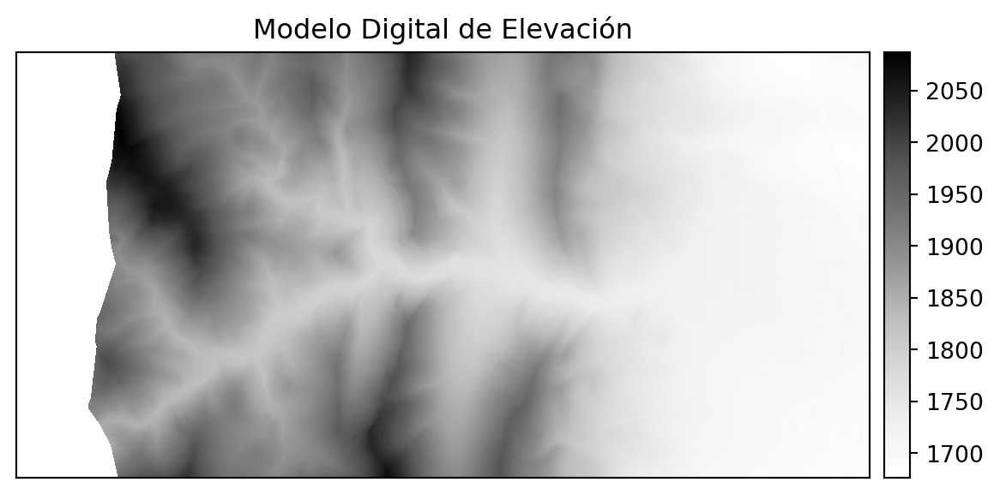
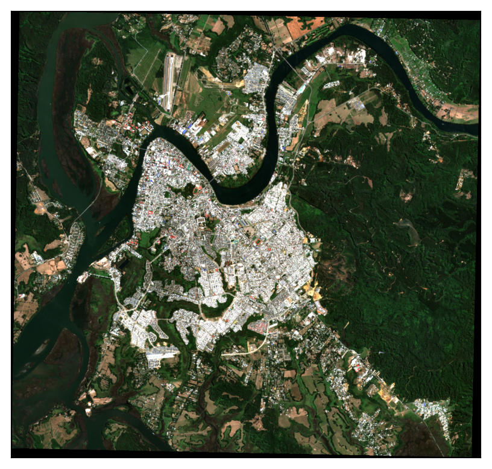
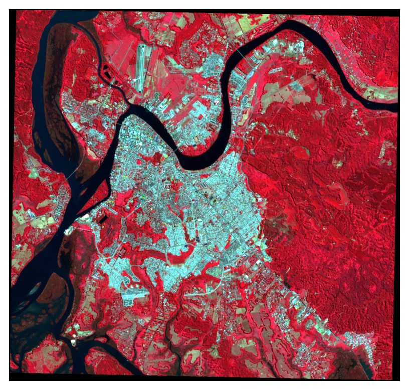
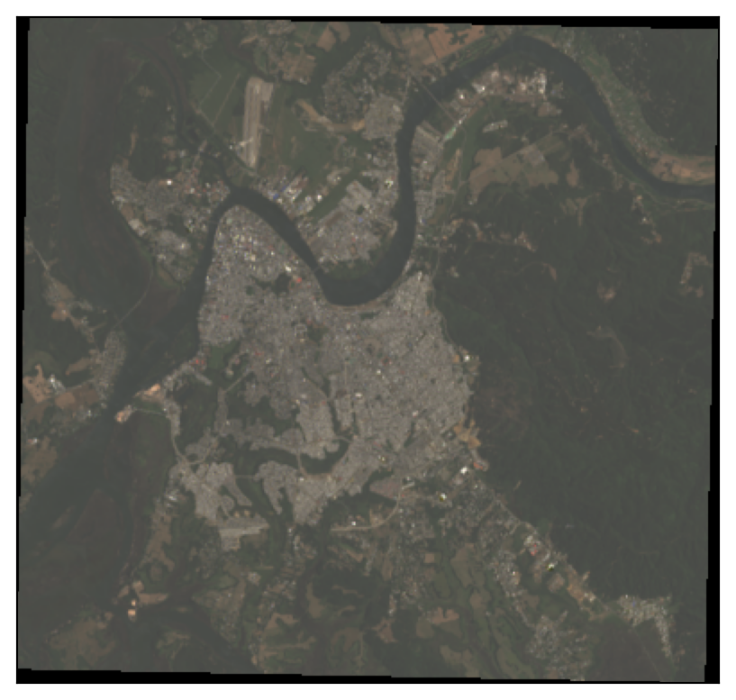

La imagen tiene 1 bandas.
La imagen tiene EPSG:32613.2 Fundamentos de Geomática y Análisis de Datos Satelitales
En las Ciencias de los Tierra, existen principalmente dos formas de representar la realidad, los datos vectoriales y los datos raster.
2.1 Datos vectoriales
Los datos vectoriales están compuestos de posiciones geométricas discretas (valores x,y), conocidos como vértices, que definen la forma del objeto espacial. La organización de los vértices determina el tipo de vector con el que se está trabajando, existiendo tres tipos de datos, los puntos, las líneas y los polígonos. Entre los formatos más utilizados se encuentra el shapefile (.shp) o el GeoJSON (.geojson).
2.2 Datos Raster
Los rasters o las cuadrículas, son datos almacenados como una grilla de valores, los cuales son dibujados en mapas como pixeles. Cada valor de pixel representa un área de la superficie de la tierra formando el dato espacial. Un archivo raster está compuesto de una cuadrícula regular de celdas, las cuales poseen el mismo tamaño. Es común que ya hayamos usados datos raster, ya sea en fotografías digitales o en una imagen de Google Earth. Sin embargo, los raster que vamos a trabajar son diferentes de las fotografías, puesto que se encuentran espacialmente referenciados. Cada pixel representa un área de la superficie de la tierra. Esta área está definida por la resolución espacial del raster. No hay que olvidar que los datos raster son representaciones matriciales de datos espaciales.
Los datos raster pueden tener una o más layers (capas o variables). Por ejemplo, un modelo de elevación, generalmente solo ofrecerá una layer que representa la elevación de la superficie de la tierra en un lugar determinado. Sin embargo, otros datos que incluyen imágenes y series temporales de datos, pueden resultar en un raster que está compuesto de varias layers. Distintos tipos de archivos pueden ser usados para acomodar diferentes tamaños y estructuras de datos raster.
2.3 Sistemas de referencia
Es muy común que se obtengan datos espaciales desde distintas fuentes y que esos datos cubran diferentes extensiones espaciales. Este tipo de datos espaciales se encuentran a menudo en diferentes Sistemas de Referencia de Coordenadas (CRS, por sus siglas en inglés). En el caso de que se quiera trabajar con datos en distints CRS deberemos reproyectarlos. Sin embargo, es importante mencionar que cuando reproyectamos los datos, los estamos modificando. De esta forma estamos introduciendo alguna incerteza en nuestros datos. Mientras que esta incerteza es ligeramente menos importante en los datos vectoriales que en los raster, es necesario considerarla. Por otra parte, si solo se reproyecta para crear un mapa base, no es importante.
2.4 Dentro de Python
En Python las librerías principales para poder trabajar con datos raster son rasterio y earthpy. rasterio es una librería de Python diseñada para leer y escribir datos raster geoespaciales, mientras que earthpy facilita el manejo de multiples tipos de datos, lidiando con su descarga, descompresión y visualización.
Por ejemplo, se cargará e imprimirá la información de un raster de elevación (DEM)
A través de earthpy podemos visualizarlo:

2.5 Tipos de imagenes
Anteriormente se mostró imágenes con una sola banda, la cual puede servir para representar elevación. Sin embargo, hay más tipos de imágenes:
Multiespectral
Las imágenes multiespectrales son datos en varias bandas del espectro electromagnético. Cada banda representa una parte diferente del espectro, por ejemplo, visible, infrarrojo cercano, infrarrojo medio, etc. Las bandas son herramientas analíticas de la superficie terrestre. Por ejemplo, la imagen de un satélite multispectral tiene bandas para:
Luz visible (rojo, verde, azul [RGB])
Infrarrojo cercano (NIR)
Infrarrojo medio (MIR)
Estas bandas pueden se combinan para obtener distintas composiciones que resalta características específicas, como la vegetación o el agua. Al combinar distintas bandas podemos obtener distintas composiciones:


Nota
Es importante resaltar que las composiciones de color no afectan el contenido de los datos Raster, sino únicamente su visualización.
2.6 Transformaciones espectrales
Las transformaciones espectrales son operaciones matemáticas que se realizan con las bandas de las imágenes de satélite. Están diseñadas para realzar una característica específica de las imágenes. Entre las transformaciones más usadas se encuentran los Índices de Vegetación (IVs) que realzan características como el vigor o el contenido de humedad de la vegetación.
En el contexto de los incendios forestales, las transformaciones espectrales hacen uso de las firmas espectrales, realzando así las distintas condiciones de daño que se pueden encontrar en la vegetación afectada por los incendios.
2.7 Plataformas y fuentes de datos satelitales
Existen diversas plataformas y fuentes de datos satelitales que proporcionan imágenes y datos geoespaciales para una amplia variedad de aplicaciones.
MODIS
Es un instrumento llamado Espectrorradiómetro de Imágenes de Resolución Moderada (Moderate-Resolution Imaging Spectroradiometer) abordo de satélites Terra y Aqua de la NASA. Es capaz de de capturar 36 bandas espectrales con una resolución espacial desde 250 metros a 1 kilómetro. Es ampliamente ocupado debido a su alta resolución temporal (nivel diario).
Landsat
El programa Landsat son una seria de misiones satelitáles gestionadas por la NASA y el Servicio Geológico de Estados Unidos (USGS). Desde 1972 han proporcionado imágenes multiespectrales de alta resolción (30 metros) y va continuamente lanzando nuevos satélites. El último ha sido Landsat 9, que fue lanzado el 2021 mejorando la calidad y adquisición de las imágenes de su antecesor (Landsat 8).
Sentinel
Es un programa comandado por la Agencia Espacial Europea (ESA), lanzando distintas misiones llamadas Sentinel. Al igual que Landsat, proporciona imágenes de alta resolucion para el monitoreo del Medio Ambiente. El último lanzamiento fue en 2015, el cual consta de dos satélites, Sentinel-2A y Sentinel-2B, capturando 13 bandas y una resolución que varía desde los 10 a 60 metros.
2.7.1 Diferencias entre plataformas
A continuación se presentan las diferencias entre dos imágenes, una de Landsat y otra de Sentinel, tomadas en un periodo de tiempo cercano (3 meses) para observar sus discrepancias.
